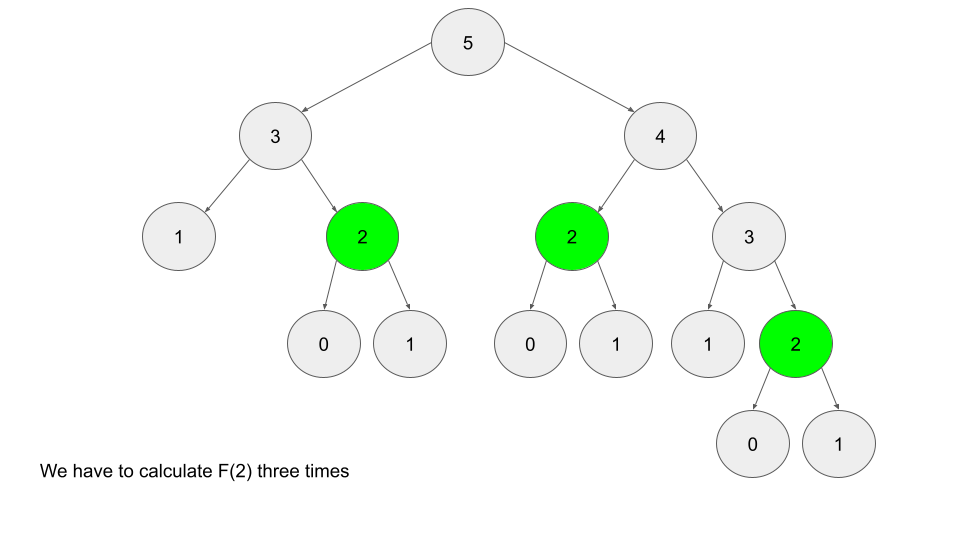

Существует два способа реализации алгоритма DP:
Давайте кратко рассмотрим каждый метод.
Восходящий метод реализуется с помощью итераций и начинается с базовых случаев. Давайте снова используем последовательность Фибоначчи в качестве примера. Базовые случаи последовательности Фибоначчи: F(0)=0 и Ф(1)=1. При восходящем подходе мы будем использовать эти базовые случаи для расчета F(2), а затем использовать этот результат для вычисления F(3) и так далее до F(n).
F[i] = F[i - 1] + F[i - 2]
Сверху вниз реализуется с помощью рекурсии и становится более эффективным благодаря мемоизации. Если мы хотим найти n-е число Фибоначчи F(n), мы пытаемся вычислить его, находя F(n−1) и F(n−2). Это определяет рекурсивный шаблон, который будет продолжаться до тех пор, пока мы не достигнем базовых случаев. F(0)=F(1)=1. Проблема с простой рекурсивной реализацией заключается в том, что возникает масса ненужных повторяющихся вычислений. Взгляните на дерево рекурсии, если мы хотим найти F(5):

Обратите внимание, что нам нужно вычислить F(2) три раза. Это может показаться не таким уж большим делом, но если бы нам пришлось вычислить F(6), все это изображение было бы всего лишь одним дочерним элементом корня. Представьте себе, если бы мы хотели найти F(100) — объем вычислений экспоненциален и быстро возрастет. Решение этой проблемы — запомнить результаты.
Запоминание результата означает сохранение результата вызова функции, обычно в хэш-карте или массиве, чтобы при повторном вызове той же функции мы могли просто вернуть запомненный результат вместо пересчета результата.
После того, как мы вычислим F(2), давайте сохраним его где-нибудь (обычно в хэш-карте), чтобы в будущем, когда нам понадобится найти F(2), мы могли просто обратиться к уже вычисленному значению вместо того, чтобы проходить через все дерево снова. Ниже приведен пример того, как выглядит дерево рекурсии для поиска F(6) с мемоизацией и без нее:
if i is 0 or 1:
return i
if i doesn't exist in memo:
memo[i] = F(i - 1) + F(i - 2)
return memo[i]
Любой алгоритм DP можно реализовать любым методом, и есть причины предпочесть любой из них. Однако у каждого метода есть одно главное преимущество:
Мы будем говорить подробнее об этих двух вариантах на протяжении всей карты. На данный момент все, что вам нужно знать, это то, что сверху вниз используется рекурсия, а снизу вверх — итерация.